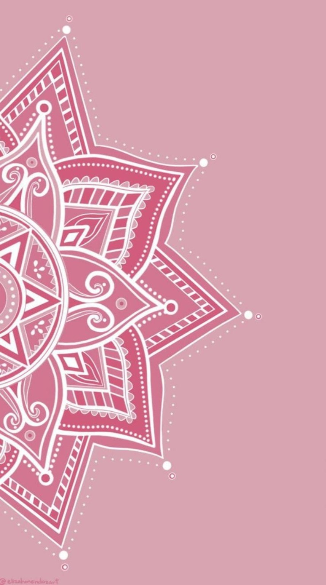

Elevação vibracional
Um olhar para seu estado energético e para os padrões que podem estar influenciando a forma como você percebe, sente e vivencia diferentes áreas da sua vida.
TERAPIA ÁGATHA · AUTOCONHECIMENTO · ENERGIA
Uma jornada de autoconhecimento, equilíbrio energético e evolução para quem sente que existe algo a mais para viver.
Quero agendar meu atendimento ↗Você sente que está fazendo tudo o que pode, mas algumas áreas da sua vida continuam travadas?
A Terapia Ágatha utiliza uma abordagem energética voltada para o autoconhecimento, a consciência vibracional e a evolução pessoal, ajudando você a olhar com mais clareza para o momento que está vivendo e para onde deseja chegar.
Sua transformação começa quando você escolhe olhar para si.
Existem momentos em que parece que a vida não flui. Você deseja mudar, evoluir, prosperar, viver relacionamentos mais leves ou simplesmente voltar a sentir conexão com você mesma.
A metodologia apresenta a evolução como uma jornada contínua — não como uma mudança instantânea — envolvendo consciência, autocuidado e novos movimentos na vida.
Um olhar para seu estado energético e para os padrões que podem estar influenciando a forma como você percebe, sente e vivencia diferentes áreas da sua vida.
Através do atendimento, você é convidada a observar o momento atual, reconhecer o que deseja transformar e encontrar novos caminhos para sua evolução.
A proposta é caminhar em direção a uma vida mais consciente, presente, amorosa e alinhada àquilo que faz sentido para você.
A Semente da Vida é a principal ferramenta utilizada nos atendimentos, pois é um instrumento de evolução e elevação vibracional, que realiza limpeza, criando uma blindagem energética, trazendo equilíbrio e harmonia, elevando a vibração, nos conectando com a nossa evolução e nos apoiando ao aprendizado de uma forma leve e amorosa.
Mais do que compreender uma ferramenta, meu convite é olhar para você, sua história, seus desejos e o caminho que deseja construir.
Quero conhecer a terapia ↗✦ Busca autoconhecimento e evolução espiritual;
✦ Se interessa por energia e vibração;
✦ Deseja desenvolver uma relação mais consciente consigo mesma;
✦ Busca mais equilíbrio em diferentes áreas da vida;
✦ Sente que precisa de clareza para tomar novos caminhos;
✦ Tem interesse em espiritualidade, lei da atração e consciência;
✦ Deseja viver uma relação mais leve com a vida e consigo mesma.
Há mais de 10 anos iniciei um processo de Evolução, com aprendizados desde mindset, mecânica quântica, gnose, desenvolvimento humano até chegar à terapia holística, onde me encontrei na Egrégora de Ágatha.
Acredito que evolução não precisa ser um caminho pesado. Ela pode acontecer com consciência, presença, amorosidade e, principalmente, com disposição para olhar para dentro.
Foi a partir dessa visão que nasceu meu propósito como Terapeuta Ágatha: acolher pessoas que desejam compreender melhor seu momento atual, cuidar da sua energia e avançar em sua jornada de evolução.
Eu escolho evoluir ↗Ao longo da nossa jornada, acumulamos experiências, emoções, crenças e padrões que podem influenciar a maneira como enxergamos a vida.
A abordagem Ágatha parte da compreensão de que cada pessoa possui uma jornada individual de evolução e que é possível desenvolver maior consciência sobre seus padrões e escolhas.
Contribuir para que você possa olhar para sua vida com mais consciência e encontrar caminhos de evolução que façam sentido para você.
Não estou aqui para viver sua vida por você. Estou aqui para acolher, conduzir e oferecer uma perspectiva energética para que você possa caminhar com mais clareza.
Existirão dias de expansão. Existirão dias em que você precisará desacelerar. E tudo bem.
O importante é continuar se conhecendo, cuidando de si e fazendo os movimentos necessários para construir uma nova realidade.
Pode chegar com perguntas. Com dúvidas. Com desejos. Com aquela sensação de que alguma coisa precisa mudar, mesmo que você ainda não saiba exatamente o quê.
Vamos olhar para isso juntas. Com acolhimento. Com presença. Com amorosidade. E com respeito à sua história.
Quero conversar com a Lilian ↗
Cada pessoa chega com uma história, uma necessidade e um momento diferente. Por isso, o atendimento começa olhando para você.
Um momento para olhar para você e para o que está acontecendo na sua vida, com espaço de acolhimento e escuta.
Dentre alguns dos trabalhos podem ser abordados aspectos como:
Para quem sente que não quer apenas uma sessão, mas deseja construir um processo contínuo, estruturado em uma jornada de 4 atendimentos.
Os espaços abaixo estão preparados para receber relatos reais de clientes, com autorização.
Adicione aqui um depoimento real da cliente.
CLIENTE · COM AUTORIZAÇÃOUm relato específico sobre a experiência pode ser colocado neste espaço.
CLIENTE · COM AUTORIZAÇÃOSubstitua este texto por uma experiência verdadeira e autorizada.
CLIENTE · COM AUTORIZAÇÃOO atendimento começa a partir do seu momento atual e do que você deseja compreender, transformar ou desenvolver, dentro da abordagem energética da Terapia Ágatha.
Sim. Os atendimentos podem ser online e/ou presenciais, conforme disponibilidade.
Não. Você pode chegar com perguntas, dúvidas ou apenas com a sensação de que alguma coisa precisa mudar. A conversa inicial ajuda a compreender o momento.
Não. Os atendimentos possuem caráter complementar e não substituem acompanhamento médico, psicológico ou outros cuidados profissionais quando necessários.
Às vezes, o primeiro movimento da mudança é simplesmente reconhecer:
“Eu quero me sentir diferente.”
E esse já pode ser um começo. Estou aqui para acolher você nessa conversa.